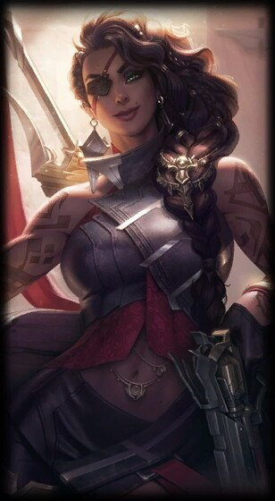

- 사미라 배경
- 챔피언과의 관계
- 능력
1.사마라의 배경

사미라는 죽음의 순간에서도 눈 하나 깜짝하지 않는다.
그저 어디에 있든 도전을 찾아 헤맬 뿐이다.
어린 시절 슈리마의 고향이 파괴된 후로 녹서스에서 자신의 길을 찾았고,
그때부터 화려하면서도 무모한 방식으로 위험한 임무를 탁월하게 완수하는 자라는 명성을 쌓았다.
검은 화약을 담은 권총과 자신을 위해 정교히 만들어진 칼날과 함께,
사미라는 생사의 상황에서 빠른 몸놀림과 재능으로 그녀의 앞을 가로막는 자들을 모두 제거한다.
더 자세한 이야기는 여길 클릭하세요.